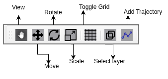
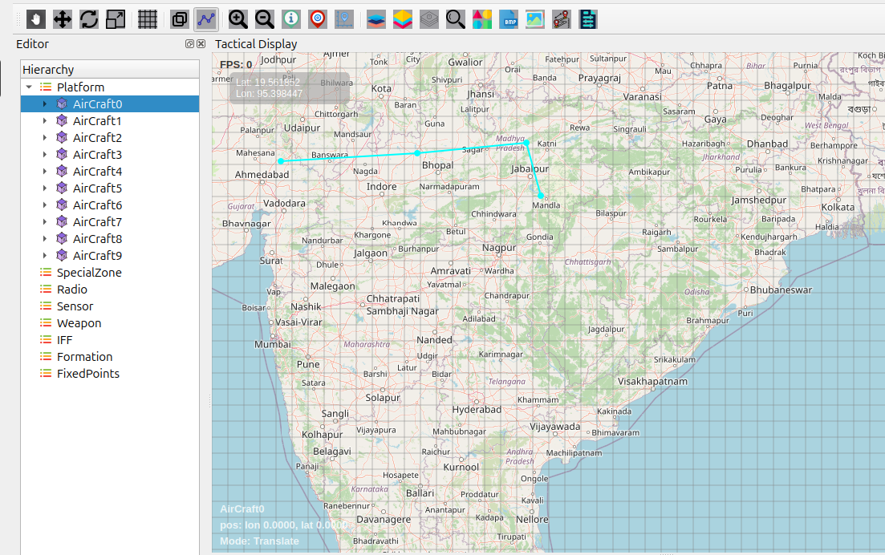
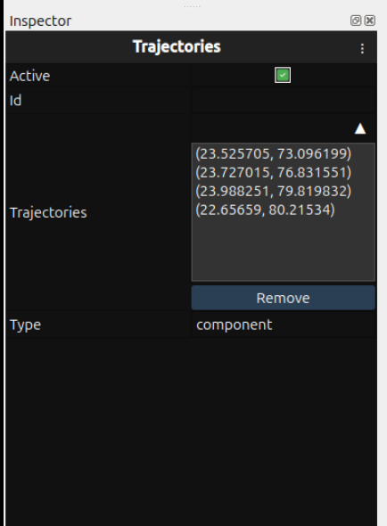
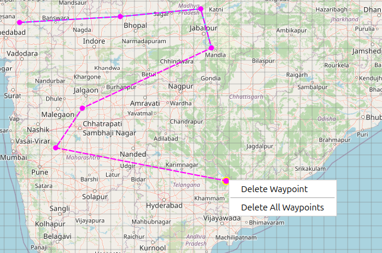

Trajectory and waypoints
{kind=link}

Trajectory Overview
The Add Trajectory feature enables users to create and manage movement paths for entities on the map. Custom trajectories with multiple waypoints can be drawn to define precise movement routes.
How to Create Trajectories
{kind=link}

2.1. Accessing Trajectory Tools
Select an entity in the Hierarchy panel
Click the Add Trajectory icon on the Design Toolbar
Ready to draw the trajectory path
2.2. Drawing Process
Click on map to place first waypoint
Continue clicking to add subsequent waypoints
Automatic line connection between waypoints
Visual path displays complete trajectory
Press ESC key to exit drawing mode
Trajectory Management
{kind=link}

3.1. Viewing Trajectory Data
Select entity with trajectory in Inspector
Click Trajectory component in entity properties
Waypoint coordinates displayed in Inspector panel
Coordinate format: (latitude, longitude)
3.2. Trajectory Inspector Display
The Trajectory component shows:
Active status toggle
Trajectory ID
Type information
Waypoint list with coordinates
3.3. Removing Trajectories
{kind=link}

Select trajectory by clicking on it
Right-click on trajectory path
Choose from two removal options:
Delete Waypoint - Removes only selected waypoint
Delete All Waypoints - Removes entire trajectory path
Trajectory permanently deleted from entity
Right-Click Menu Features
4.1. Delete All Waypoints
Removes entire trajectory path completely
All waypoints deleted at once
Trajectory becomes empty (no path)
Entity retains trajectory component without waypoints
4.2. Delete Selected Waypoint
Removes only currently selected waypoint
Other waypoints remain intact
Automatic trajectory path adjustment
Ideal for fine-tuning specific route sections